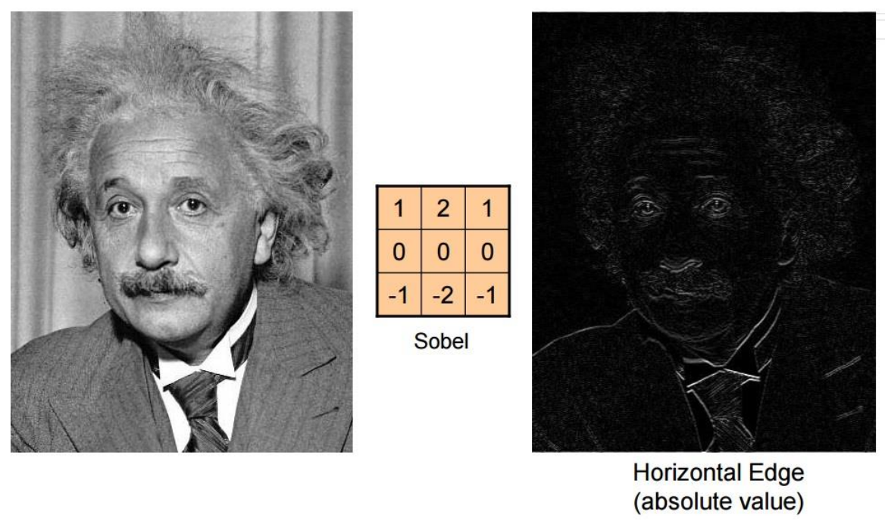

Image Filtering
Contents
Image Filtering¶
Image filtering is working on the 2D image (after capturing). Filtering is very close to Convolution.
Image filtering is used to:
Enhance images
Denoise, resize, increase contrast etc.
Extract information from images
Textures, edges, distinctive points
Detect patterns
Template matching
When we apply a filter of size \(c \times c\) on an image of \(n \times n\) dimensiions, the resultant image (without image padding) is \((n-c+1) \times (n-c+1)\)
Convolution is a summation of element-wise multiplication of pixel intensities in an image region with the image filter that is applied.
In math terms,
Image filtering |
Image filtering |
|---|---|
|

**Image filtering with the above kernel achieves the smoothining effect. (removes sharp features).
Convolution¶
Fig. 51 Convolution¶
Why to flip the kernel?
To preserve commutative and associative properties of the convolution operation.
The convolution step measures how close the vectors are in terms of the angle between the vectors.
Convolution is very close to correlation, but we first flip the kernel vertically and horizontally and then compute the dot product to get each pixel of the output image.


Edge detection¶
Sobel filter |
Sobel filter |
|---|---|
 |